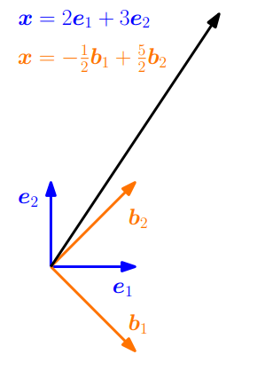

Linear Transformation
研究向量空间上结构不变的映射，这允许我们定义坐标的概念。之前我们说过向量相加并乘以标量得到的对象仍然是一个向量。这里我们希望在应用映射时保留此特性：
考虑两个实数向量空间\(\mathrm{V}\),\(\mathrm{W}\)。对于 \(\boldsymbol{x},\boldsymbol{y} \in V\) 和 \(\lambda \in \mathbb{R}\),映射\(\Phi: \mathrm{V} \rightarrow \mathrm{W}\) 保持向量空间结构不变需满足：
可以用定义来概括
定义 线性映射
对于向量空间\(\mathrm{V}\)，\(\mathrm{W}\)，如果
则称 \(\Phi: \mathrm{V} \rightarrow \mathrm{W}\) 为 线性映射(Linear Mapping)，或 向量空间同态(vector space homomorphism) 或 线性变换(linear transformation)
这使得我们可以把线性映射用矩阵表示。之前的内容：将向量集合用矩阵的列表示。在处理矩阵的时候，我们必须判断矩阵所表示的内容：是线性映射还是向量集合。后面会看到关于更多的线性映射的内容，介绍一些特殊映射
定义 单射，满射，双射
考虑一个映射 \(\Phi: \mathcal{V} \mapsto \mathcal{W}\)，其中 \(\mathrm{V}\)，\(\mathrm{W}\)是任意集合。那么 \(\Phi\) 可以是
- 单射的(Injective): \(\forall \boldsymbol{x},\boldsymbol{y} \in \mathcal{V}: \Phi(\boldsymbol{x}) =\Phi(\boldsymbol{y}) \Rightarrow \boldsymbol{x} = \boldsymbol{y}\)
- 满射的(Surjective): $\Phi(\mathcal{V}) = \Phi(\mathcal{W}) $
- 双射的(Bijective): 既是单射的，也是满射的
如果 \(\Phi\) 是满射的，那么\(\mathcal{W}\) 中的每个元素都可以通过 \(\Phi\) 从 \(\mathcal{V}\) “到达”。单射意味着映射结果相同的元素为同一元素。双射既是单射的也是满射的，所以一个双射映射\(\Phi\) 可以“撤销”（双射映射意味着两个空间的个体是一一对应的，所以可以撤销；而非双射这种多对一的情况，“撤销”后的对象是不唯一，不确定是哪一个，所以无法撤销。）即存在一个映射 \(\Psi: \mathcal{W} \mapsto \mathcal{V}\) ，使得\(\Psi \circ \Phi (\boldsymbol{x}) = \boldsymbol{x}\)。映射 \(\Phi\) 被称为 \(\Phi\) 的逆，通常用 \(\Phi ^{\mathrm{-1}}\) 表示。
在这些定义下，介绍一些向量空间\(\mathrm{V}\)和\(\mathrm{W}\)之间线性映射的特殊情况
- 同态(Homomorphism)：\(\Phi: \mathrm{V} \mapsto \mathrm{W}\) 线性
- 同构(Isomorphism)：\(\Phi: \mathrm{V} \mapsto \mathrm{W}\) 双射
- 自同态(Endomorphism)：\(\Phi: \mathrm{V} \mapsto \mathrm{V}\) 线性
- 自同构(Automorphism)：\(\Phi: \mathrm{V} \mapsto \mathrm{V}\) 双射
- 定义 \(\mathrm{id}_{\mathrm{V}}\) ：\(\mathrm{V} \rightarrow \mathrm{V},\boldsymbol{x} \mapsto \boldsymbol{x}\) 为\(\mathrm{V}\) 中的恒等映射或 单位自同构(identity mapping or identity automorphism)
例 同态
\(\Phi: \mathbb{R}^{2} \rightarrow \mathbb{C}，\Phi(\boldsymbol{x}) = x_1 + i x_2\) 是同态映射。
这也证明了为什么复数可以在 \(\mathbb{R}^{2}\) 中表示为元组：有一个双射线性映射，它将 \(\mathbb{R}^{2}\) 中的元组的元素加法转换为具有相应加法的复数集。注意，这里我们只展示了线性，而没有双射。
定理 2.17
有限维向量空间 \(\mathrm{V}\) 和 \(\mathrm{W}\) 同构当且仅当 \(\mathrm{dim}(\mathrm{V})=\mathrm{dim}(\mathrm{W})\)
定理2.17指出在两个相同维度的向量空间之前存在一个线性的双射映射。直觉上，意味着相同维度的向量空间是相同的，它们可以相互转化而不产生任何误差。
定理2.17也给出了之前将 \(\mathbb{R}^{m \times n}\)（\(m \times n\)-矩阵 张成的向量空间）和 \(\mathbb{R}^{mn}\) (\(mn\) 的向量张成的向量空间)视为相同的理由：因为它们的维数都是\(mn\) ，所以存在一个线性双射映射，将它们互相转换。（注意：向量空间的维数，由向量张成的向量空间的维数，以及由矩阵张成的向量空间的维数的区别）
备注
考虑向量空间 \(\mathrm{V},\mathrm{W},\mathrm{X}\)
- 对于线性映射\(\Phi: \mathrm{V} \mapsto \mathrm{W}\) 和 \(\Psi: \mathrm{W} \mapsto \mathrm{X}\) ，那么 \(\Psi \circ \Phi: \mathrm{V} \mapsto \mathrm{X}\) 也是线性映射。
- 如果 \(\Phi: \mathrm{V} \mapsto \mathrm{W}\) 同构，那么 \(\Phi^{-1}: \mathrm{W} \mapsto \mathrm{V}\) 也是同构的。
- 如果 \(\Phi: \mathrm{V} \mapsto \mathrm{W}, \Psi:\mathrm{V} \mapsto \mathrm{W}\) 都是线性的（同态的），那么 \(\Phi + \Psi\) 和 \(\lambda\Phi,\lambda \in \mathbb{R}\) 也是线性的（同态的）。
线性映射的矩阵表示
任何\(n\) 维向量空间同构于 \(\mathbb{R}^{n}\) （定理2.17）。我们考虑 \(n\) 维向量的空间 \(\mathrm{V}\) 的一个基\(\{\boldsymbol{b}_1,...,\boldsymbol{b}_n\}\)。在下文中，基向量的顺序很重要。我们对集进行排序，得到
并称这个 \(n\) 元组为 \(\mathrm{V}\) 的 有序基(ordered basis)
备注：基需要是有序的，所谓的“第一个坐标，第二个坐标，等”才是有意义的
备注：目前为止定义的符号有点多，在这里总结以下
- \(\mathrm{B} = (\boldsymbol{b}_1,...,\boldsymbol{b}_n)\) 为有序基
- \(\mathcal{B} = \{\boldsymbol{b}_1,...,\boldsymbol{b}_n\}\) 为（无序的）基
- \(\boldsymbol{B} = [\boldsymbol{b}_1,...,\boldsymbol{b}_n]\) 是列为 \(\boldsymbol{b}_1,...,\boldsymbol{b}_n\) 的矩阵
定义 坐标
考虑一个向量空间 \(\mathrm{V}\) 以及 \(\mathrm{V}\) 的一个有序基 \(\mathrm{B} = (\boldsymbol{b}_1,...,\boldsymbol{b}_n)\) 。对于任意的 \(\boldsymbol{x} \in \mathrm{V}\)，有唯一一个关于 \(\mathrm{B}\) 的线性组合
\(\alpha_1,...,\alpha_n\) 称为: \(\boldsymbol{x}\) 关于 \(\mathrm{B}\) 的 坐标(Coordinates)
\(\boldsymbol{\alpha}\) 为 \(\boldsymbol{x}\) 相对于有序基 \(\mathrm{B}\) 的 坐标向量/ 坐标表示(coordinate vector/ coordinate representation)
一个基有效定义了一个坐标系。我们熟悉的笛卡尔坐标系，它由标准基向量 \(\boldsymbol{e}_1,\boldsymbol{e}_2\) 构成。在这个坐标系中，向量 \(\boldsymbol{x} \in \mathbb{R}^{n}\) 都可以表示为 \(\boldsymbol{e}_1,\boldsymbol{e}_2\) 的线性组合。然而，\(\mathbb{R}^{2}\) 的任何基都定义了一个有效的坐标系，同一个向量\(\boldsymbol{x}\) 在 \((\boldsymbol{b}_1,\boldsymbol{b}_2)\) 基中可能会与 \(\boldsymbol{e}_1,\boldsymbol{e}_2\) 不同的坐标表示。
快速理解： 把坐标系斜拉以下，矩形变菱形

在图2.8中,\(\boldsymbol{x}\) 相对于标准基\((\boldsymbol{e}_1,\boldsymbol{e}_2)\) 的坐标为\([2,2]^{\mathrm{T}}\) 。然而，关于基\((\boldsymbol{b}_1,\boldsymbol{b}_2)\)，相同的向量\(\boldsymbol{x}\)被表示为\([1.09,0.27]^{\mathrm{T}}\) ，即 \(\boldsymbol{x} = 1.09\boldsymbol{b}_1 + 0.27\boldsymbol{b}_2\)。在下文中了解如果获得这种表示。
例
几何向量\(\boldsymbol{x} \in \mathbb{R}^{2}\) 相对于 \(\mathbb{R}^{2}\) 的标准基 \((\boldsymbol{e}_1,\boldsymbol{e}_2)\) 的坐标为 \([2,3]^{\mathrm{T}}\) 。可以将其表示为 \(\boldsymbol{x} = 2 \boldsymbol{e}_1 + 3 \boldsymbol{e}_2\) 。但是不一定选择标准基来表示这个向量。可以选择 $\boldsymbol{b}_1 = [1,-1]^{\mathrm{T}},\boldsymbol{b}_2=[1,1]^{\mathrm{T}} $ 为基向量，这样可以得到 \(\boldsymbol{x}\) 相对它们的坐标：\(\frac{1}{2}[-1,5]^\mathrm{T}\)

图中 \(\boldsymbol{x}\) 的不同坐标表示取决于不同的基
备注
对于一个 \(n\) 维向量空间 $ \mathrm{V}$ 和 \(\mathrm{V}\) 的一个有序基 \(\mathrm{B}\) ，映射\(\Phi: \mathbb{R}^{n} \mapsto \mathrm{V}，\Phi({\boldsymbol{e}_i})= \boldsymbol{b}_i, i=1,...,n\) 是线性的( 维度相同，所以进一步是同构的)，其中 \((\boldsymbol{e}_1,...,\boldsymbol{e}_n)\) 是关于\(\mathbb{R}^{n}\) 的标准基。
现在我们准备在 矩阵 和 有限维向量空间 之间的 线性映射 建立一个显示联系
定义2.19 变换矩阵
考虑向量空间 \(\mathrm{V}\) 和 \(\mathrm{W}\) 以及相应的有序基 \(\mathrm{B} = (\boldsymbol{b}_1,...,\boldsymbol{b}_n)\) 和 \(\mathrm{C} = (\boldsymbol{c}_1,...,\boldsymbol{c}_m)\) 。再考虑线性映射 \(\Phi: \mathrm{V} \mapsto \mathrm{W}\)：
\(\Phi(\boldsymbol{b}_j)\) 表示 \(\boldsymbol{b}_j\) 经过变换后相对 \(\mathrm{C}\) 的唯一坐标表示。然后我们得到
我们称 \(m \times n\) 矩阵 \(\boldsymbol{A}_{\Phi}\) 为 \(\Phi\)（关于 \(\mathrm{V}\) 的有序基 和 \(\mathrm{W}\)的有序基）的* 变换矩阵(transformation matrix)*
\(\Phi(\boldsymbol{b}_j)\) 相对于 \(\mathrm{W}\) 的有序基 \(\mathrm{C}\) 的坐标是 矩阵 \(\boldsymbol{A}_{\Phi}\) 的第 \(j\) 列。
考虑(有限维) 向量空间\(\mathrm{V}\)、\(\mathrm{W}\)及其对应的有序基\(\mathrm{B}\)、\(\mathrm{C}\) 和变换矩阵\(\boldsymbol{A}_{\Phi}: \mathrm{V} \rightarrow \mathrm{W}\)。
如果 \(\hat{\boldsymbol{x}}\) 是 \(\boldsymbol{x} \in \mathrm{V}\) 相对于\(\mathrm{B}\)的坐标向量。\(\hat{\boldsymbol{y}}\) 是 \(\boldsymbol{y} = \Phi(\boldsymbol{x}) \in \boldsymbol{W}\) 相对于\(\mathrm{C}\) 的坐标向量，则
这意味着可以使用变换矩阵将相对于 \(\mathrm{V}\) 的有序基的坐标映射到相对于\(\mathrm{W}\)中有序基的坐标。
例 变换矩阵
考虑 同态映射 \(\Phi: \mathrm{V} \rightarrow \mathrm{W}\) 以及 \(\mathrm{V}\) 的有序基 \(\mathrm{B}=(\boldsymbol{b}_1,...\boldsymbol{b}_n)\) 和 \(\mathrm{W}\) 的有序基\(\mathrm{C}=(\boldsymbol{c}_1,...\boldsymbol{c}_n)\) 并由:
可得关于 \(\mathrm{B}\) 和 \(\mathrm{C}\) 满足 $\Phi(\boldsymbol{b}k) = \sum_i,k=1,...,3 $ 的变换矩阵 }^{4}\alpha_{ij} \boldsymbol{c\(\boldsymbol{A}_{\Phi}\) 为
其中\(\boldsymbol{\alpha}_j,j=1,2,3\) 为\(\Phi(\boldsymbol{b}_j)\)相对于\(\mathrm{C}\) 的坐标向量
例 向量的线性变换

图2.10 向量线性变化的三个例子
- (a) 初始数据
- (b) 旋转45°
- (c) 水平坐标拉伸
- (d) 反射、旋转和拉升的组合
考虑 \(\mathbb{R}^{2}\) 中的一组向量的三个线性变换及其变换矩阵
图2.10给出了一组向量线性变换的三个例子。图（a) 显示了 \(\mathbb{R}^{2}\) 中的400个向量，每个向量对应 \((x_1,x_2)\)-坐标 的一个点。向量排列成正方形。
当我们矩阵使用\(\boldsymbol{A}_1\) 对这些向量进行线性变换时，我们得到了（b）中被旋转的正方形。
如果\(\boldsymbol{A}_2\) 表示的线性映射，我们得到（c）中的矩形，其中每个 \(x_1\)坐标 被拉伸2倍。
（d）显示了对原始图形使用\(\boldsymbol{A}_3\) 线性变换后的图形，\(\boldsymbol{A}_3\) 是反射、旋转和拉伸的组合。
基变换
接下来，我们观察下当改变 \(\mathrm{V}\) 和 \(\mathrm{W}\) 的基时，线性映射 $\Phi:\mathrm{V}\rightarrow\mathrm{W} $ 是怎样变化的。
考虑 \(\mathrm{V}\) 的两个 有序基(ordered basis)
和 \(\mathrm{W}\) 的两个 有序基(ordered basis)
\(\boldsymbol{A}_{\Phi} \in \mathbb{R}^{m \times n}\) 是关于 基\(\mathrm{B}\)和\(\mathrm{C}\) 的映射 \(\Phi: \mathrm{V} \rightarrow \mathrm{W}\) 的变换矩阵。
\(\tilde{\boldsymbol{A}}_{\Phi} \in \mathbb{R}^{m \times n}\) 是关于 基\(\tilde{\mathrm{B}}\)和\(\tilde{\mathrm{C}}\) 的映射 \(\Phi: \mathrm{V} \rightarrow \mathrm{W}\) 的另一个变换矩阵。
下面我们研究需要研究 \(\boldsymbol{A}\)和\(\tilde{\boldsymbol{A}}\) 是什么关系，
即：如果我们选择从基\(\mathrm{B},\mathrm{C}\)到基\(\tilde{\mathrm{B}},\tilde{\mathrm{C}}\) 进行基变换，我们是否可以或如何 将 \(\boldsymbol{A}_{\Phi}\) 变换成\(\tilde{\boldsymbol{A}}_{\Phi}\)
备注
向量\(\boldsymbol{x}\)的坐标表示，取决于基(basis)的选择。在图2.9中我们经过恒等映射\(\mathrm{id}_{\mathrm{V}}\) 得到向量不同的坐标表示。这意味着，在不改变向量\(\boldsymbol{x}\)的情况下，将它相对于\((\boldsymbol{e}_1,\boldsymbol{e}_2)\) 的坐标映射到相对于\((\boldsymbol{b}_1),\boldsymbol{b}_2\)的坐标上。通过改变基，从而改变向量的表示，这允许通过一个简单的变换矩阵直接计算实现。
例 基变换的必要性
考虑一个关于\(\mathbb{R}^{2}\)标准基的变换矩阵
如果我们定义一个新基：
可以得到一个关于\(\mathrm{B}\)的对角变换矩阵
它比\(\boldsymbol{A}\)更容易处理。
在下面，我们将研究将一个基的坐标向量转换成另一个基的坐标向量的映射。我们首先陈述主要结论，然后给出解释。
定理2.20 基变换
对于线性映射 \(\Phi: \mathrm{V} \rightarrow \mathrm{W}\)，\(\mathrm{V}\)的有序基
和 \(\mathrm{W}\) 的有序基
以及 \(\boldsymbol{A}_{\Phi} \in \mathbb{R}^{m \times n}\) 是关于\(\mathrm{B}\)和\(\mathrm{C}\) 的映射\(\Phi: \mathrm{V} \rightarrow \mathrm{W}\)的变换矩阵。\(\tilde{\boldsymbol{A}}_{\Phi} \in \mathbb{R}^{m \times n}\) 是关于\(\tilde{\mathrm{B}}\)和\(\tilde{\mathrm{C}}\)相应的变换矩阵，它由以下公式给出：
其中，\(\boldsymbol{S} \in \mathbb{R}^{n \times n}\) 为\(\mathrm{id}_{\mathrm{V}}\)的变换矩阵，它将相对于\(\tilde{\mathrm{B}}\) 的坐标映射到\(\mathrm{B}\)。而\(\boldsymbol{T} \in \mathbb{R}^{m \times m}\)为\(\mathrm{id}_{\mathrm{W}}\) 的变换矩阵，它将相对于\(\tilde{\mathrm{C}}\)的坐标映射到\(\mathrm{C}\)
证明
把 \(\mathrm{V}\) 的新基 \(\tilde{\mathrm{B}}\) 的向量写成\(\mathrm{B}\)的基向量的线性组合：
同理，把 \(\mathrm{W}\) 的新基 \(\tilde{\mathrm{C}}\) 的向量写成\(\mathrm{C}\)的基向量的线性组合：
我们定义
- \(\boldsymbol{S} = ((s_{ij})) \in \mathbb{R}^{n \times n}\) 为将相对于 \(\tilde{\mathrm{B}}\) 的坐标 映射到\(\mathrm{B}\)的 变换矩阵
- \(\boldsymbol{T} = ((t_{lk})) \in \mathbb{R}^{m \times m}\) 是将相对于 \(\tilde{\mathrm{C}}\) 的坐标 映射到\(\mathrm{C}\)的 变换矩阵
特别地，\(\boldsymbol{S}\) 的 第 \(j\) 列是\(\tilde{\boldsymbol{b}}_j\) 相对于\(\mathrm{B}\)的坐标，而\(\boldsymbol{T}\)的 第\(k\) 利\(\tilde{\boldsymbol{c}}_k\) 是相对于 \(\mathrm{C}\) 的坐标表示。注意 \(\boldsymbol{S}\) 和 \(\boldsymbol{T}\) 都是正则的（可逆的）
我们将从两个角度来看 \(\Phi(\tilde{\boldsymbol{b}}_j)\)
第一，通过映射\(\Phi\)，对于\(j = 1,...n\)，我们可以得到
我们首先将新的基向量\(\tilde{\boldsymbol{c}}_k \in \mathrm{W}\)表示为基向量 \(\boldsymbol{c}_k \in \mathrm{W}\) 的线性组合，然后交换求和顺序。
或者，利用\(\Phi\)的线性，把\(\tilde{\boldsymbol{b}}_j \in \mathrm{V}\)表示为\(\boldsymbol{b}_j \in \boldsymbol{V}\) 的线性组合，可以得到
比较\((2.108)\)和\((2.109b)\)的两个式子，得出对于所有 $j = 1,...n $ 和 \(l = 1,...,m\),有:
所以
则：
证毕。
定理2.20 告诉我们，对于\(\mathrm{V}\) （\(\mathrm{B}\)变换为\(\mathrm{\tilde{B}}\)）和 \(\mathrm{W}\)（\(\mathrm{C}\) 变换为\(\tilde{\mathrm{C}}\)）的基变换，线性映射\(\Phi: \mathrm{V} \rightarrow \mathrm{W}\)的变换矩阵\(\boldsymbol{A}_{\Phi}\) 与等价矩阵\(\tilde{\boldsymbol{A}}_{\Phi}\)替换关系为：

图2.11 对于一个同态映射\(\Phi: \mathrm{V} \rightarrow \mathrm{W}\) 和 \(\mathrm{V}\)的有序基\(\mathrm{B},\tilde{\mathrm{B}}\) 以及 \(\mathrm{W}\) 的有序基\(\mathrm{C},\tilde{\mathrm{C}}\) (用蓝色标记)，我们可以把相对于 \(\tilde{\mathrm{B}},\tilde{\mathrm{C}}\) 的映射 \(\Phi_{\mathrm{\tilde{C}\tilde{B}}}\)等价地表示为同态映射的组合 \(\Phi_{\mathrm{\tilde{C}\tilde{B}}}=\Xi_{\mathrm{\tilde{C}C}} \circ \Phi_{\mathrm{CB}} \circ \Psi_{\mathrm{B\tilde{B}}}\)，其中各个符号的下标为该符号对应的基变换对象。 相应的变换矩阵用红色表示。
图2.11 说明了这种关系：考虑一个同态映射\(\Phi: \mathrm{V} \rightarrow \mathrm{W}\) 和 \(\mathrm{V}\) 的有序基\(\mathrm{B},\tilde{\mathrm{B}}\) 以及 \(\mathrm{W}\) 的有序基\(\mathrm{C},\tilde{\mathrm{C}}\) 。映射 \(\Phi_{\mathrm{CB}}\) 是 \(\Phi\) 的一个实例，它将\(\mathrm{B}\)的基向量映射为\(\mathrm{C}\)的基向量的线性组合。
假设我们已知关于有序基\(\mathrm{B}\),\(\mathrm{C}\)的\(\Phi_{\mathrm{CB}}\)的变换矩阵\(\boldsymbol{A}_{\Phi}\)。 当我们在\(\mathrm{V}\)中\(\mathrm{B}\)到\(\mathrm{\tilde{B}}\) 和\(\mathrm{W}\)中\(\mathrm{C}\)到\(\mathrm{\tilde{C}}\)间执行基变换时， 我们可以通过以下步骤得到相应的变换矩阵\(\boldsymbol{\tilde{A}}_{\Phi}\)
首先，我们找到了线性映射\(\Psi_{\mathrm{B\tilde{B}}} : \mathrm{V} \rightarrow \mathrm{V}\)的矩阵表示， 它将相对于新基\(\mathrm{\tilde{B}}\) 的坐标映射到相对"旧"基\(\mathrm{B}\)（在\(\mathrm{V}\)中）的（唯一）坐标上。
然后，我们使用\(\Phi_{\mathrm{CB}}:\mathrm{V} \rightarrow \mathrm{W}\) 的变换矩阵\(\boldsymbol{A}_{\Phi}\)将这些坐标映射到相对于\(\mathrm{W}\)中的基\(\mathrm{C}\)的坐标上。
最后，我们使用线性映射\(\Xi_{\mathrm{\tilde{C}C}}: \mathrm{W} \rightarrow \mathrm{W}\) 将相对于\(\mathrm{C}\)的坐标 映射到 相对于\(\mathrm{\tilde{C}}\)的坐标上。
因此，我们可以把线性映射\(\Phi_{\mathrm{\tilde{C}\tilde{B}}}\) 表示为包含"旧"基的线性映射的组合：
具体的说，我们使用\(\Psi_{\mathrm{B\tilde{B}}} = \mathrm{id}_\mathrm{V}\) 和 \(\Xi_{\mathrm{C\tilde{C}}} = \mathrm{id}_\mathrm{W}\)，即将向量恒等映射到自身所在的向量空间，单相对于不同的基。
定义2.21 等价
如果存在正则矩阵 \(\boldsymbol{S} \in \mathbb{R}^{n \times n}\) 和 \(\boldsymbol{T} \in \mathbb{R}^{m \times m}\)， 使得 \(\tilde{\boldsymbol{A}} = \boldsymbol{T}^{-1} \boldsymbol{A} \boldsymbol{S}\)， 则称两矩阵\(\boldsymbol{A},\boldsymbol{\tilde{A}} \in \mathbb{R}^{m \times n}\) 等价(Equivalence)
定义2.22 相似
如果存在正则矩阵 \(\boldsymbol{S} \in \mathbb{R}^{n \times n}\) 使得\(\boldsymbol{\tilde{A}} = \boldsymbol{S}^{-1}\boldsymbol{A}\boldsymbol{S}\) ，则称两矩阵\(\boldsymbol{A},\boldsymbol{\tilde{A}} \in \mathbb{R}^{m \times n}\) 相似(Similarity)
备注：
相似矩阵总是等价的。然而，等价矩阵不一定相似。
备注：
考虑向量空间\(\mathrm{V}\),\(\mathrm{W}\),\(\mathrm{X}\)。从 定理2.17 后面的备注中， 我们已经知道，对于线性映射\(\Phi: \mathrm{V} \rightarrow \mathrm{W}\)和 \(\Psi:\mathrm{W} \rightarrow \mathrm{X}\) ,映射 \(\Phi \circ \Psi : \mathrm{V} \rightarrow \mathrm{X}\)也是线性的。 若这两个映射相应的变换矩阵为\(\boldsymbol{A}_{\Phi}\) 和 \(\boldsymbol{A}_{\Psi}\)， 则整个变换矩阵是\(\boldsymbol{A}_{\Psi \circ \Phi} = \boldsymbol{A}_{\Psi} \boldsymbol{A}_{\Phi}\)。
鉴于此，我们可以从构建线性映射的角度来看待基的变化：

- \(\boldsymbol{A}_\Phi\) 为关于基 \(\mathrm{B}\)，\(\mathrm{C}\)的线性映射\(\Phi_{\mathrm{CB}}: \mathrm{V} \rightarrow \mathrm{W}\) 的变换矩阵
- \(\boldsymbol{\tilde{A}}_{\Phi}\) 为关于基 \(\mathrm{\tilde{B}}\)，\(\mathrm{\tilde{C}}\)的线性映射\(\Phi_{\mathrm{ \tilde{C} \tilde{B} }}: \mathrm{V} \rightarrow \mathrm{W}\) 的变换矩阵
- \(\boldsymbol{S}\)是线性映射 $\Psi_{\mathrm{ B \tilde{B} }}: \mathrm{V} \rightarrow \mathrm{V} \(（自同构）的变换矩阵，它用\)\mathrm{B}\(表示\)\mathrm{\tilde{B}}\(。通常，\)\Psi = \mathrm{id}_{\mathrm{V}}$ 是\(\mathrm{V}\)中的恒等映射。
- \(\boldsymbol{T}\)是线性映射 $\Xi_{\mathrm{ C \tilde{C} }}: \mathrm{W} \rightarrow \mathrm{W} \(（自同构）的变换矩阵，它用\)\mathrm{C}\(表示\)\mathrm{\tilde{C}}\(。通常，\)\Xi = \mathrm{id}_{\mathrm{W}}$ 是\(\mathrm{W}\)中的恒等映射。
如果我们（非正式地）用基的形式表示变换，那么有:
- \(\boldsymbol{A}_{\Phi}: \mathrm{B} \rightarrow \mathrm{C}\)
- \(\boldsymbol{\tilde{A}}_{\Phi} : \mathrm{\tilde{B}} \rightarrow \mathrm{\tilde{C}}\)
- \(\boldsymbol{S} : \mathrm{\tilde{B}} \rightarrow \mathrm{B}\)
- \(\boldsymbol{T} : \mathrm{\tilde{C}} \rightarrow \mathrm{C}\)
- \(\boldsymbol{T}^{-1}: \mathrm{C} \rightarrow \mathrm{\tilde{C}}\)
- 以及
注意，(2.116)中的执行顺序是从右向左的，因为向量是在右侧相乘，即
例 基变换
考虑一个线性映射\(\Phi: \mathbb{R}^{3} \rightarrow \mathbb{R}^{4}\) 的变换矩阵为：
变换相应的标准基为：
我们求\(\Phi\) 关于新基
的变换矩阵\(\boldsymbol{A}_{\Phi}\)，首先求出：
式中，\(\boldsymbol{S}\) 的第 \(i\) 列是 \(\mathrm{\tilde{b}}_i\) 相对于\(\mathrm{B}\)的基向量的坐标表示。对于一般的基\(\mathrm{B}\) ，我们需要解一个线性方程组来求\(\lambda_i\) ，使得\(\sum_{i=1}^{3}\lambda_i\boldsymbol{b}_i = \boldsymbol{\tilde{b}}_j,j=1,...,3\)。类似地，\(\boldsymbol{T}\) 的第\(j\) 列是\(\boldsymbol{\tilde{c}}_j\)相对于\(\mathrm{C}\)的基向量的坐标表示。
因此，我们可以得到
在第四章中，我们将利用基变换的概念来寻找一个基，使得自同态的变换矩阵有一个特别简单的（对角）形式。
在第十找章降维中，我们将利用基变换研究一个数据压缩问题，即找到一个基并在这个基上投影数据从而压缩数据，同时最小化压缩损失。
像与核
线性映射的像和核是具有某些重要性质的向量子空间。在下面，我们将详细地描述它们。
定义23 像与核(Image and Kernal)
对于\(\Phi: \mathrm{V} \rightarrow \mathrm{W}\)，我们定义 核/零空间(e kernel / null space) 为:
以及 像/值域(image / range) 为：
原书籍中 \(\forall\) 是 \(\exists\) 可能有误
我们也分别称\(\mathrm{V}\)和\(\mathrm{W}\)为\(\Phi\)的定义域(domain) 和陪域(codomain) 或称为上域、到达域
直观的说，核是被\(\Phi\)映射到单位元\(\mathbf{0}_{\mathrm{W}} \in \mathrm{W}\)上的 一组向量 \(\boldsymbol{v} \in \mathrm{V}\)
像是一组向量 \(\boldsymbol{w} \in \mathrm{W}\)，\(\mathrm{V}\)中任何向量都能被 \(\Phi\) 映射"到达" 像。如图2.12所示

图2.12 线性映射 \(\Phi : \mathrm{V} \rightarrow \mathrm{W}\) 的核与像
备注
考虑线性映射\(\Phi : \mathrm{V} \rightarrow \mathrm{W}\)，其中 \(\mathrm{V}\) 和 \(\mathrm{W}\) 为向量空间
- 当\(\Phi(\boldsymbol{0}_\mathrm{V}) = \boldsymbol{0}_\mathrm{W}\) 总是成立，因此\(\boldsymbol{0}_\mathrm{V} \in \mathrm{ker}(\Phi)\)，特别地，零空间永远不会是空。
- \(\mathrm{Im}(\Phi) \subseteq \mathrm{W}\) 是 \(\mathrm{W}\) 的子空间，而 $ = \mathrm{ker}(\Phi) \subseteq \mathrm{V}$ 是 \(\mathrm{V}\) 的子空间
- 当且仅当 \(\mathrm{ker}(\Phi) = \{\boldsymbol{0}\}\)，\(\Phi\) 为单射的 （一对一）
备注：零空间与列空间
考虑 \(\boldsymbol{A} \in \mathbb{R}^{m \times n}\) 以及线性映射 \(\Phi: \mathbb{R}^{n} -> \mathbb{R}^{m}, \boldsymbol{x} \mapsto \boldsymbol{A}\boldsymbol{x}\)
对于 \(\boldsymbol{A} = [\boldsymbol{a}_1,...,\boldsymbol{a}_n]\)，\(\boldsymbol{a}_i\) 为 \(\boldsymbol{A}\) 的列，我们可以得到
即：像是\(\boldsymbol{A}\) 的列的张成空间，也成为 列空间(column space)。因此，列空间（像）是\(\mathbb{R}^{m}\) 的子空间，其中\(\mathrm{m}\)是矩阵的“高度”。
- \(\mathrm{rk}(\boldsymbol{A}) = \mathrm{dim}(\mathrm{Im}(\Phi))\)
- 核/零空间\(\mathrm{ker(\Phi)}\)是齐次线性方程组 \(\boldsymbol{A}\boldsymbol{x}=\boldsymbol{0}\) 的通解，即使得 \(\boldsymbol{A}\)的列的线性组合为\(\boldsymbol{0} \in \mathbb{R}^{m}\) 和 \(\mathbb{R}^{n}\) 中的元素
- 核是\(\mathbb{R}^{n}\)的子空间，其中\(\mathrm{n}\)是矩阵的“宽度”。
- 核关注列之间的关系，我们可以使用它来确定是否/如何将列表示为其他列的线性组合
例 线性映射的像和核
映射:
是线性的。为了确定\(\mathrm{Im}(\Phi)\)，我们可以取变换矩阵列的生成空间(span)，得到
为了计算 \(\Phi\) 的核（零空间），我们需要解 \(\boldsymbol{A}\boldsymbol{x} = \boldsymbol{0}\) ，也就是说，我们需要解一个齐次方程组。为此，使用高斯消元法将\(\boldsymbol{A}\)转化为行最简阶梯型：
这个矩阵是行最简阶梯型，我们可以使用之前提到的 Minus-1 技巧来计算核的基本。或者，我们将非主元列 （第3列和第4列）表示为主元列（第1列和第2列）的线性组合。第三列\(\boldsymbol{a}_3\) 相当于第二列\(\boldsymbol{a}_2\) 的\(-\frac{1}{2}\)倍数。因此，\(0 = a_3 + -\frac{1}{2}\boldsymbol{a}_2\) 。以同样的方式，我们看到 \(\boldsymbol{a}_4 = \boldsymbol{a}_1 - \frac{1}{2}\boldsymbol{a}_2\) ，因此\(0 = \boldsymbol{a}_1 - \frac{1}{2}\boldsymbol{a}_2 - \boldsymbol{a}_4\) 。总的来说，可以得到核（零空间）为
定理2.24 秩-零化度定理
对于向量空间\(\mathrm{V}\) ，\(\mathrm{W}\) 和线性映射 \(\Phi : \mathrm{V} \rightarrow \mathrm{W}\)，总有
秩-零化度定理(Rank-Nullity Theorem) 也被称为 线性映射的基本理论（fundamental theorem of linear mappings，下面是通过该定理得到的结论：
- 如果 \(\mathrm{dim}(\mathrm{Im}(\Phi)) \lt \mathrm{dim}(\mathrm{V})\)， 那么 \(\mathrm{ker}(\Phi)\)是非平凡的，即核不仅包含 \(\boldsymbol{0}_\mathrm{V}\)，且\(\mathrm{dim}(\mathrm{ker}(\Phi)) \ge 1\)
- 如果 \(\boldsymbol{A}_{\Phi}\)是\(\Phi\)相对于有序基的变换矩阵， 且 \(\mathrm{dim}(\mathrm{Im}(\Phi)) < \mathrm{dim}(\mathrm{V})\) ，则线性方程组 \(\boldsymbol{A} \boldsymbol{x} = \boldsymbol{0}\) 有无穷多个解。
- 如果 \(\mathrm{dim}(\mathrm{V}) = \mathrm{dim}(\mathrm{W})\)，则以下三个说法等价
- \(\Phi\) 是单射的
- \(\Phi\) 是满射的
- \(\Phi\) 是双射的 因为 \(\mathrm{Im}(\Phi) \subseteq \mathrm{W}\)